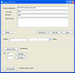

The easiest way to use vb2Py from the command line is by working in the vb2py directory in your Python site-packages location.
To check the basic usage from the command line:
> python converter.py -h
Two example projects should be installed in the folder, vb2py/vb/test1 and test2. To convert the test2 project (which is slightly more meaningful than test1!) to a PythonCard project, use the command:
> python converter.py -c vb/test/test2.vbp vb/test/test2 -c = convert the code also vb/test/test2.vbp = the VB project file for the project vb/test/test2 = the location of the generated Python files
The directory where the Python files will be put must exist before you run the conversion.
If you have PythonCard installed you can see what the forms look like by typing:
> python vb/test/test2/frmMain.py
You should see a form open with a lot of controls on it. Clicking on the controls should perform the same actions as for the VB version.

See the full form
For cases where you don't have a VB project file (*.vbp), you can still use the converter to convert individual files on at a time. The following command will convert the single code module in the test2 project:
> python converter.py -c -f vb/test/Utils.bas vb/test/test2
The code will be placed in the destination directory. Note that when doing file-by-file conversions certain parts of the conversion will not be possible. In particular, global variables will not be correctly handled since in order to determine the correct qualified name for a global, vb2Py needs to know all the files within the project.
For example, when converting an entire project the following code segment (where BASEDIR is defined in a module called FileGlobals):
Function addBaseDirectory(Path as String)
addBaseDirectory = BASEDIR & Path ' BASEDIR is a global
End Function
Would be converted to:
def addBaseDirectory(Path):
_ret = FileGlobals.BASEDIR + Path
return _ret
However, if the file is translated on its own (using the -f command line switch) then it would be converted to:
def addBaseDirectory(Path):
_ret = BASEDIR + Path
return _ret
{kind=link}